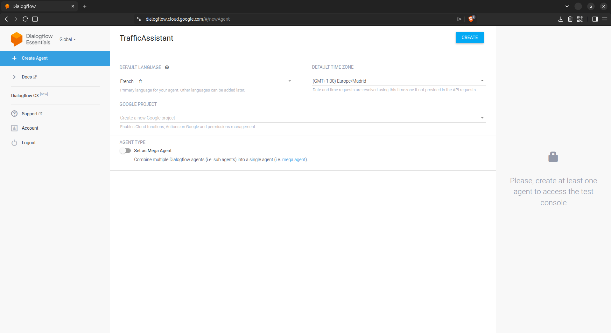
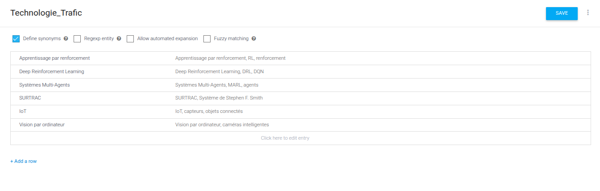

Configuration de l'agent
Création et entité
Agent TrafficAssistant et entité @Technologie_Trafic

Création de l'agent
Configuration initiale de TrafficAssistant

@Technologie_Trafic
Entité personnalisée avec synonymes
Intents configurés
Phrases d'entraînement et réponses
Configuration de chaque intention sur Dialogflow ES